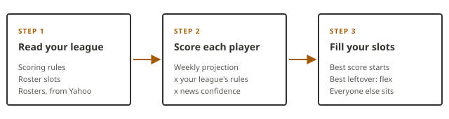

How it decides
Bench Notes does not predict the future. It combines three things that are known before kickoff — a weekly projection, your league's own scoring rules, and the latest injury news — and shows you how they added up.
The three steps

- Read your league. Your league's scoring rules, roster slots and rosters come straight from Yahoo Fantasy, stat by stat.
- Score each player. Every player gets a weekly point projection, re-scored with your league's exact rules. If there is injury news or a recent headline about him, an AI model rates how worried you should be, from 1 to 100, and the projection is scaled by that rating.
- Fill your slots. The highest score at each position gets the start. The best running back, receiver or tight end left over takes the flex spot, and everyone else sits.
Gut feel vs. the tool
Most start/sit decisions come down to four questions. Here is how people usually answer them, and what Bench Notes looks at instead.
| Factor | How most people decide | What Bench Notes weighs |
|---|---|---|
| Matchup | Which defense sounds bad this week | Built into the weekly projection, which already accounts for the opponent — so it is not counted twice |
| Volume | Whoever scored last week | A projection of this week's points, not last week's box score |
| Scoring rules | Generic rankings from a big site | Your league's own rules from Yahoo, including PPR, and your actual roster slots |
| Availability | Whatever the group chat said | Official injury status plus recent headlines, rated by an AI model |
What it does not know
A tool that explains itself should also be honest about its blind spots. These are the ones worth knowing before you trust a call:
- Late news. Headlines are collected on a schedule, so a surprise inactive announced shortly before kickoff can slip past it. Check the news yourself before a Sunday lock.
- A separate defense ranking. The opponent only counts through the projection. A true “points allowed” ranking needs a few weeks of real results, so it is switched off early in the season.
- Rare plays. Kick and punt return touchdowns are not projected for anyone, because no free source forecasts them.
- Anything you know that the news does not. If you have a good reason to disagree, the reasoning is right there so you can see where.
If the AI model is unavailable, the tool falls back to the projection alone rather than guessing.